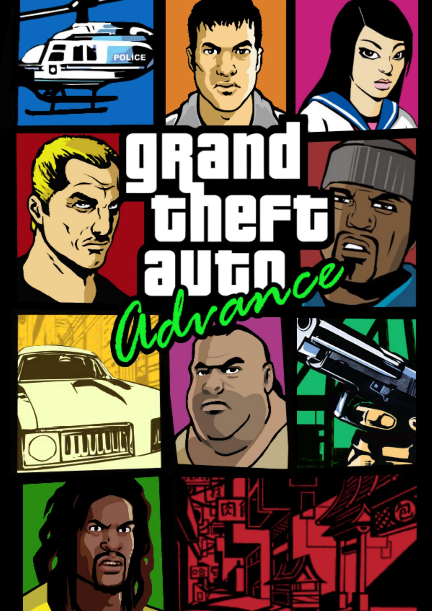
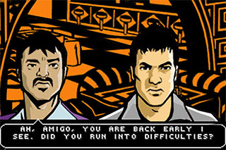
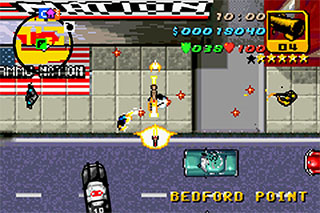
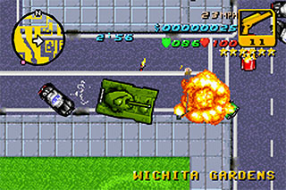

Grand Theft Auto Advance

Descripción
Grand Theft Auto Advance nos lleva de vuelta a Liberty City, esta vez con una historia completamente nueva y adaptada a Game Boy Advance.
El juego mantiene la esencia de la saga, ofreciendo un mundo abierto en el que podremos recorrer la ciudad libremente, realizar misiones para diferentes personajes y abrirnos camino dentro del mundo criminal.
Aunque presenta una perspectiva cenital similar a la de los primeros GTA, consigue trasladar la experiencia clásica de la franquicia a una consola portátil.
Capturas del videojuego



Información del videojuego
| Desarrollador | Plataforma | Fecha de lanzamiento |
|---|---|---|
| Digital Eclipse | Game Boy Advance | 24 de octubre de 2004 |